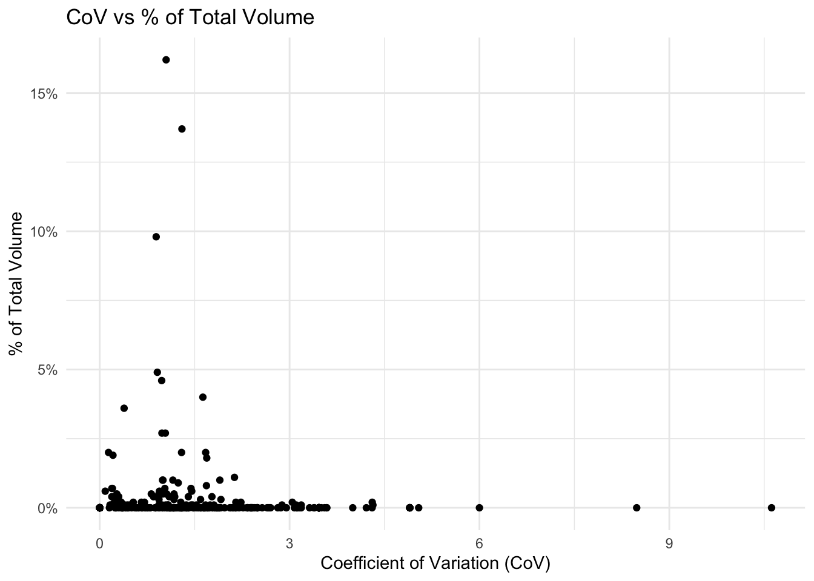
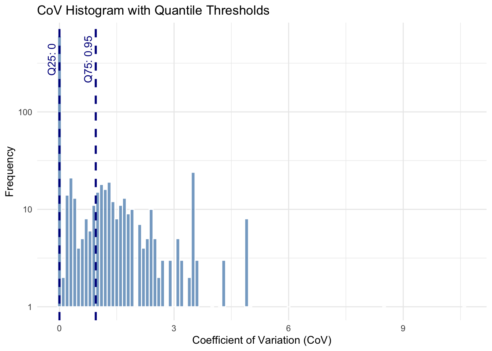
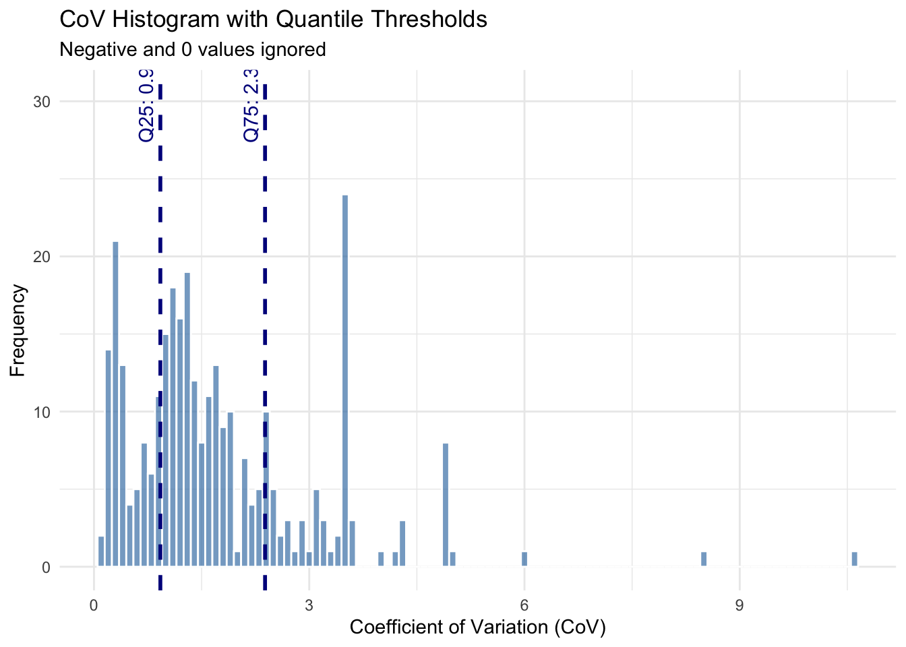
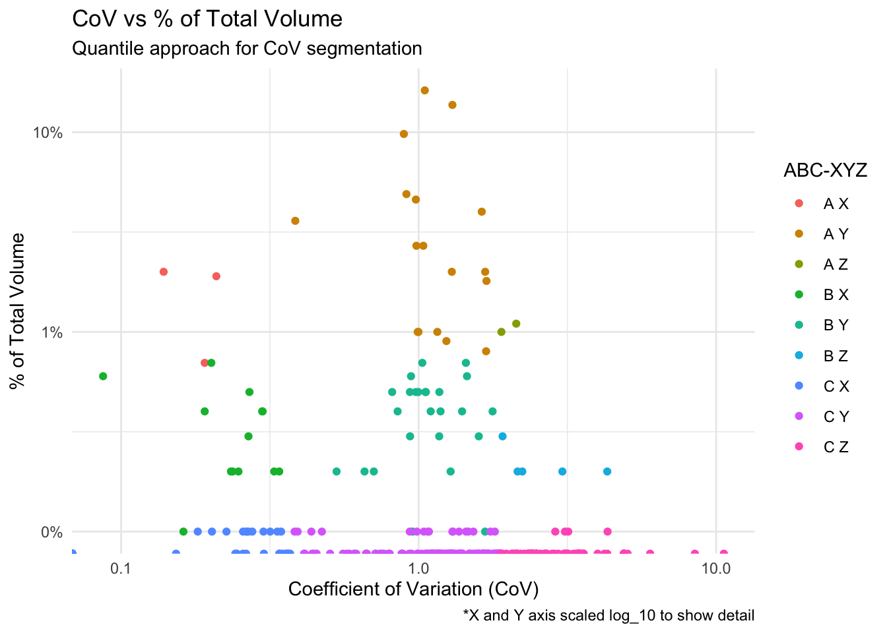

| territory | product_line | customer | period | qty |
|---|---|---|---|---|
| West | Gas Mowers | Walk-In Customer | 2024-11-01 | 369 |
| West | Gas Mowers | Walk-In Customer | 2024-12-01 | 59 |
| West | Gas Mowers | Walk-In Customer | 2025-01-01 | 68 |
| West | Gas Mowers | Walk-In Customer | 2025-02-01 | 956 |
| West | Gas Mowers | Walk-In Customer | 2025-03-01 | 32 |
| West | Gas Mowers | Walk-In Customer | 2025-04-01 | 81 |
Align forecasting effort with what matters most
Summary
ABC-XYZ segmentation is one of the most practical ways to align forecasting methods with actual demand behavior. Rather than applying a single model across all products, this approach segments items based on two key dimensions:
Volume contribution (ABC) — how important an item is to the business
Demand variability (XYZ) — how predictable that item is over time
In practice, this segmentation becomes a foundation for forecast model selection, planner prioritization, and S&OP decision-making.
In this example, we walk through a simplified, real-world approach using a gardening equipment dataset. The goal is not to build a complex model, but to demonstrate how planners can quickly classify demand and use that classification to drive better forecasting outcomes.
Data Setup & Preparation
To keep the example simple and broadly applicable, the dataset is structured at a common planning level:
Territory
Product Line
Customer
Month (period)
Units Sold (qty)
This reflects a typical demand planning grain used in many organizations.
After loading the data, the first step is straightforward cleanup:
Standardize column names
Ensure dates are properly formatted
Confirm quantities are numeric
The focus here is not data engineering, but creating a clean dataset that supports repeatable analysis.
Step 1: Understanding Volume and Variability
The foundation of ABC-XYZ segmentation is built on two simple metrics:
Percent of Total Volume
Coefficient of Variation (CoV)
Percent of total helps answer:
"Which items actually drive the business?"
CoV helps answer:
"How predictable is demand for each item?"
This is where most of the value comes from — not the classification itself, but the visibility into demand behavior.
| territory | customer | product_line | tot_qty | cov | pct_tot |
|---|---|---|---|---|---|
| West | Select Seeds | Gas Mowers | 319860 | 1.049 | 0.162 |
| West | Woles | Mulch Bags | 270175 | 1.299 | 0.137 |
| West | Woles | Gas Mowers | 194107 | 0.892 | 0.098 |
| West | House Store | Mulch Bags | 96892 | 0.910 | 0.049 |
| West | House Store | Gas Mowers | 90254 | 0.979 | 0.046 |
| West | Woles | Seed Spreaders | 78506 | 1.630 | 0.040 |
Visualization
Plotting CoV against percent of total volume creates a simple but powerful view:
High volume + low variability → stable, high-impact items
Low volume + high variability → unpredictable, low-impact items
Everything else falls somewhere in between
This visualization is often where planners start to recognize:
which items can be automated
which require attention
where forecasting errors are most likely to occur

Step 2: ABC-XYZ Segmentation
Using standard thresholds:
ABC (Volume Contribution)
A: Top ~80% of volume
B: Next ~15%
C: Remaining ~5%
XYZ (Variability)
X: Low variability
Y: Moderate variability
Z: High variability
Each combination (e.g., AX, BY, CZ) represents a different type of demand pattern.
This creates a simple framework:
| Segment | Interpretation |
|---|---|
| AX | High volume, stable — ideal for automation |
| BY | Moderate importance, some variability |
| CZ | Low volume, highly unpredictable — often not worth heavy modeling |
At this stage, the goal is not perfection — it's directional clarity.
| territory | customer | product_line | tot_qty | cov | pct_tot | cum_pct | abc_class | xyz_class | ABC_XYZ |
|---|---|---|---|---|---|---|---|---|---|
| West | Select Seeds | Gas Mowers | 319860 | 1.049 | 0.162 | 0.162 | A | Z | A Z |
| West | Woles | Mulch Bags | 270175 | 1.299 | 0.137 | 0.299 | A | Z | A Z |
| West | Woles | Gas Mowers | 194107 | 0.892 | 0.098 | 0.397 | A | Z | A Z |
| West | House Store | Mulch Bags | 96892 | 0.910 | 0.049 | 0.446 | A | Z | A Z |
| West | House Store | Gas Mowers | 90254 | 0.979 | 0.046 | 0.492 | A | Z | A Z |
| West | Woles | Seed Spreaders | 78506 | 1.630 | 0.040 | 0.532 | A | Z | A Z |
Plot ABC-XYZ Assignments
Step 3: Improving the Variability Segmentation
One of the limitations of traditional XYZ segmentation is the use of fixed thresholds.
In real datasets (especially retail or seasonal categories like gardening equipment), demand variability is rarely evenly distributed.
To address this, we test a quantile-based approach, where:
thresholds are derived from the actual data distribution
segmentation adapts to the business context
This results in:
more balanced classification
better separation between stable and volatile items
improved alignment with real demand patterns

Step 4: Handling Edge Cases
Two practical adjustments improve the segmentation:
Zero or near-zero demand
These items can distort variability calculations
Assigning them to "X" avoids unnecessary noise
Negative or undefined CoV
- Reset to zero for stability
These small decisions matter — they make the segmentation usable in real planning environments.

Comparing Approaches
Here are the thresholds for segmentation for each method respectively:
| method | a | b | c | x | y | z |
|---|---|---|---|---|---|---|
| percentile | 80% | 15% | 5% | 0.25 | 0.5 | >0.50 |
| quantile_1 | 80% | 15% | 5% | 0 | .393 | >.393 |
| quantile_2 | 80% | 15% | 5% | .37 | 1.879 | >1.879 |
Recommendation
In this example, the quantile-based approach provides a more realistic segmentation than fixed thresholds.
It adapts to:
skewed demand distributions
uneven product portfolios
real-world variability patterns
For most organizations, this approach is a strong starting point when building:
forecast model selection logic
planner workflows
segmentation-driven reporting
Plot Updated Classifications
The plot below illustrates the updated ABC-XYZ combinations under this method.

Conclusion
ABC-XYZ segmentation is often introduced as a classification exercise, but its real value lies in how it shapes decision-making.
By combining volume importance with demand variability, planners gain a clear view of where to:
automate forecasting
apply more advanced models
focus human judgment
In this example, we kept the approach intentionally simple — but the same framework scales across more complex environments and planning tools.
For organizations looking to improve forecast accuracy and efficiency, ABC-XYZ segmentation is not just a technique — it is a foundation for building a more structured, data-driven planning process.
No matching items